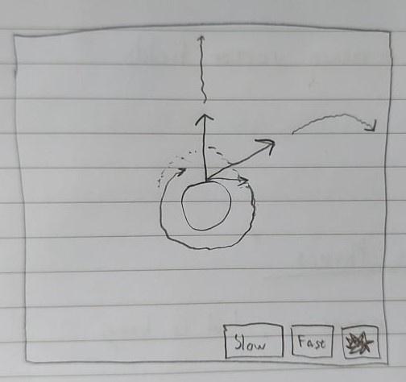

Escape Velocity¶
Say you wanted to get to Proxima Centauri, the star closest to our own.

It’s 4.2465 light-years away, or about 40,208,000,000,000 km. That’s pretty far, but you said nothing about getting there soon, so it shouldn’t be that hard.
Leaving Earth¶
The first problem you’d face is leaving the Earth. We will ignore air resistance, and how to gain speed, and simply assume you start fully sped up. How much speed would you need to leave the Earth for good?
The real problem is the Earths gravity. It pulls you towards it with a force \(F\)
where \(G\) is the gravitational constant, \(m_1\) is the mass of the Earth, \(m_2\) is your mass, and \(r\) is the distance from you to the center of the Earth.
The first key insight here is that as you go further away from the Earth, the force of gravity approaches zero. This means that you don’t need to fight gravity forever to escape it, you only need to get far enough away with a little speed left over, that way gravity will effectively dissipate. What goes up mustn’t come down.
The second key insight is that when you’re only being affected by gravity, you’re either speeding up and moving down, or slowing down and moving up. It just so happens that these two behaviours are in perfect balance, the kinetic energy you lose when slowing down while moving up is gained as gravitational potential energy. And when you move closer to the Earth and speed up, your gravitational potential energy is being turned back into kinetic energy.
Kinetic energy is the energy associated the the movement of an object with mass \(m\) and velocity \(v\), and is given by
The interactive window below shows the value of kinetic energy and gravitational potential energy when moving in a gravitational field.
The interactive window above showed how with enough initial kinetic energy you can escape gravity, but just how much do you need? We can find this by calculating the amount of work gravity does from your starting distance \(r_0\) into infinity. Energy that is “taken” or “given” by a force is given by the amount of work. Work is equal to force times distance, but since the force of gravity changes with distance, we need to integrate the force over the distance instead:
Exercises¶
a) How does your kinetic energy change with distance when you’re very far away from Earth? What about when you’re very close?
b) Does the total energy change at all? Why?
c) Calculate the integral to find the initial kinetic energy you need to escape the Earths gravity.
d) Find the initial velocity you need to escape the Earths gravity.
e) If you started falling towards the Earth from infinitely far away (with no velocity), how fast would you be going when you hit the ground? What if you started falling from 1000 km away?
f) Below is an interavtive window that lets you choose your starting direction when leaving Earth. What initial velocity would you need to escape the Earths gravity if you started at a 45\(^\circ\) angle?
Useful values: \(G = 6.674*10^{-11}m^3kg^{–1}s^{–2}\), \(m_1 = 5.972*10^{24}kg\), \(r_0 = 6.371*10^6 m\) (the radius of the Earth).
Solution
This is how much kinetic energy gravity can “take”, and if you start with more kinetic energy than this, gravity will never be able to stop you. Proxima Centauri better get ready!*
TODO
————-[Interactive where you choose the starting angle and see how you fly. The point is that starting angle doesen’t matter, as long as you’re moving away from the Earth with enough kinetic energy. You can also choose to go slow to enter orbit or crash into the Earth, depending on how steep the angle is.]———-
